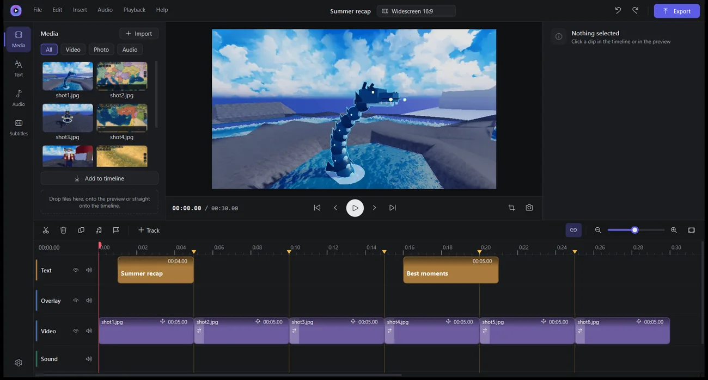

Windows 10 및 11용
Kadr
Shorts와 YouTube를 위한 무료 동영상·사진 편집기
TikTok, Shorts, Reels용 세로 동영상이나 일반 YouTube 동영상을 자르고, 썸네일, 콜라주, 게시물을 만들어요. 배경 제거와 사진의 AI 화질 개선은 내 PC에서 실행돼요.
무료 · 광고 없음 · Windows 10 및 11(64비트)
업데이트는 앱 안에서 확인해요. 자동 다운로드는 끌 수 있어요
이 웹사이트와 같은 27개 언어

작동 방식
첫 클립이나 사진부터 완성된 파일까지 네 단계면 돼요.
- 1
설치
설치 프로그램을 실행하세요. 내 Windows 사용자에게 설치되며 관리자 권한은 필요 없어요. Windows가 경고하면 추가 정보를 누른 다음 실행을 누르세요.
- 2
프로젝트 시작
동영상은 9:16, 16:9, 1:1, 4:5 중에서 형식을 고르세요. 사진은 사진을 열거나 준비된 캔버스 크기를 고르세요.
- 3
편집
클립, 사진, 음악을 타임라인에 올리고 자르고, 자막, 전환, 필터를 추가하세요. 사진 편집기에서는 레이어와 텍스트를 추가하고 배경을 제거할 수 있어요.
- 4
내보내기
동영상은 MP4(480p부터 4K까지), GIF, MP3로, 사진은 PNG, JPG, WebP로 저장하세요.
동영상 편집기
멀티 트랙 타임라인
썸네일과 파형이 있는 여러 개의 동영상·오디오 트랙. 분할, 다듬기, 복사, 스냅, 마커.
자막
스타일 프리셋, PC에 있는 모든 글꼴, 윤곽선, 배경 상자, 애니메이션 등장 효과.
전환과 속도
디졸브, 검정으로 페이드, 슬라이드, 줌. 음높이를 유지한 0.1×에서 8× 속도, 그리고 클립 안의 속도 곡선.
세로 프레이밍
맞추기 또는 채우기, 미리보기에서 레이어 끌기, 사진과 동영상의 느린 줌과 이동.
색감
필터 6종, 밝기, 대비, 채도, 선명도, 필름 그레인.
사운드
오디오 분리, 최대 200%의 볼륨. 클립별 선택 설정으로 다른 소리 아래에서 트랙을 낮출 수 있고, 내보낼 때 음량을 −14 LUFS로 맞출 수 있어요. 비트 마커는 박자가 일정한 음악에서 가장 잘 작동해요.
자막
.srt 가져오기와 내보내기. 선택 사항으로 내 API 키로 ElevenLabs를 통한 자동 자막.
내보내기
24–60 fps의 480p, 720p, 1080p, 1440p, 4K MP4, GIF, MP3. 4K는 빠른 확대와 AI 업스케일링 중에서 고를 수 있으며, AI 업스케일링은 지원되는 그래픽 카드가 없으면 느려요.
사진 편집기
YouTube 썸네일, 콜라주, 게시물을 위해.
레이어와 캔버스 크기
레이어로서의 사진과 텍스트. 썸네일, 정사각형 게시물, 스토리용으로 준비된 크기.
배경 제거
클릭 한 번으로, 내 PC에서. 약 115 MB의 모델은 한 번만 내려받아요. 블러 브러시와 배경 흐리게도 있어요.
AI 화질 개선 ×2 또는 ×4
2–5 MB의 Real-ESRGAN 모델을 한 번만 내려받아요. 내 사진은 절대 업로드되지 않아요.
브러시, 도형, 클립보드
브러시, 지우개, 화살표, 도형. Ctrl+V로 스크린샷을 붙여 넣고, Ctrl+Shift+C로 결과를 복사해요.
무료, 광고 없음 · 동영상 프로젝트 자동 저장 · 서명된 업데이트
자주 묻는 질문
Windows에서 ‘Windows의 PC 보호’라는 창이 떠요. 괜찮은가요?
Windows는 유료 코드 서명 인증서가 없는 앱에 이 메시지를 표시하는데, Kadr에는 그 인증서가 없어요. 추가 정보를 누른 다음 실행을 누르세요. Kadr의 자체 업데이트는 설치 전에 디지털 서명으로 검증돼요.
내 동영상이나 사진이 어딘가에 업로드되나요?
아니요. 내 컴퓨터에 남아 있고, 배경 제거와 화질 개선도 컴퓨터에서 실행돼요. 유일한 예외는 자동 자막이며, 내가 시작할 때만 해당돼요. 선택한 클립의 오디오가 내 API 키로 ElevenLabs에 전송돼요.
Kadr는 인터넷이 왜 필요한가요?
업데이트를 확인하고(Kadr를 시작할 때와 6시간마다), 업데이트를 내려받고, AI 모델마다 한 번 내려받기 위해서예요. 확인 자체는 끌 수 없어요. 설정 → 업데이트에서는 자동 다운로드만 끌 수 있어요. 자동 자막도 사용하면 온라인에 접속해요.
AI에는 강력한 그래픽 카드가 필요한가요?
아니요. 하지만 그래픽 카드가 없으면 훨씬 느려요. DirectML이 켜져 있으면(기본값이에요) AI가 그래픽 카드를 사용하며, 배경 제거는 비디오 메모리를 약 5 GB까지 쓸 수 있어요. 설정 → AI에서 프로세서만 쓰도록 바꿀 수 있어요.
Kadr나 PC가 중단되면 어떻게 되나요?
동영상 프로젝트는 45초마다 자동 저장되고, 다음에 Kadr가 복구를 제안해요. 사진 프로젝트는 자동 저장되지 않으므로 직접 저장하세요.
Kadr는 무엇으로 만들어졌나요?
FFmpeg, Qt 같은 오픈 소스 구성 요소와 비공개인 Microsoft DirectML을 사용합니다. 모든 구성 요소와 라이선스는 앱의 “정보 → 라이선스”에 나와 있습니다. 이 라이선스들이 요구하는 대로 오픈 소스 구성 요소의 소스 코드를 내려받을 수 있습니다.
어떻게 제거하고, 무엇이 남나요?
Windows 설정 → 앱에서 Kadr를 제거하세요. 설정, 최근 프로젝트 경로, 암호화된 ElevenLabs 키는 레지스트리에 남고, 자동 저장, 캐시, 모델은 %LOCALAPPDATA%\Kadr에 남아요. 삭제하는 방법은 개인정보 처리방침에 나와 있어요.
새로운 내용: 2.9.1
정보 화면과 설치 프로그램에 이용 약관 링크를 추가했습니다. 라이선스 창에 FFmpeg 프로그램에 포함된 모든 라이브러리의 라이선스 전문과 저작권 고지가 포함되었습니다.
파일은 어떻게 확인하나요?
다운로드한 파일의 SHA-256 체크섬이 다음 값과 일치해야 합니다:
동영상과 사진은 내 PC에 남아요
Kadr에는 계정도, 광고도, 분석도 없고, 개발자는 데이터를 받지 않아요. 업데이트를 위해, AI 모델을 한 번 내려받기 위해, 그리고 내가 시작하면 자동 자막을 위해 온라인에 접속해요. DirectML이 켜져 있으면 Microsoft가 내 Windows 설정에 따라 진단 데이터를 받을 수 있어요.
개인정보 처리방침 읽기질문과 아이디어: pegasohlib12@gmail.com